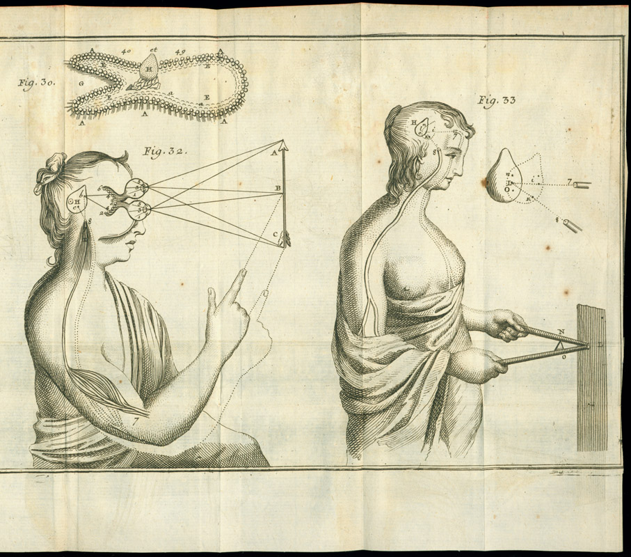

phenomenalism : aspect and representation
on the priority of belief (against truth)
semantic phenomenalism, a defense of the lifeworld against theorists
an informal epistolary summary
the lifeworld
j s mill's phenomenalism
phenomenology without consciousness
aspect ontology
against physicalism
notes on ontological cubism
the ontological horizon
time : the nothingness of every entity
the world as the logical unity of its sides
a sketch of neophenomenalism
we do not seek truth
first-person-ness of the world